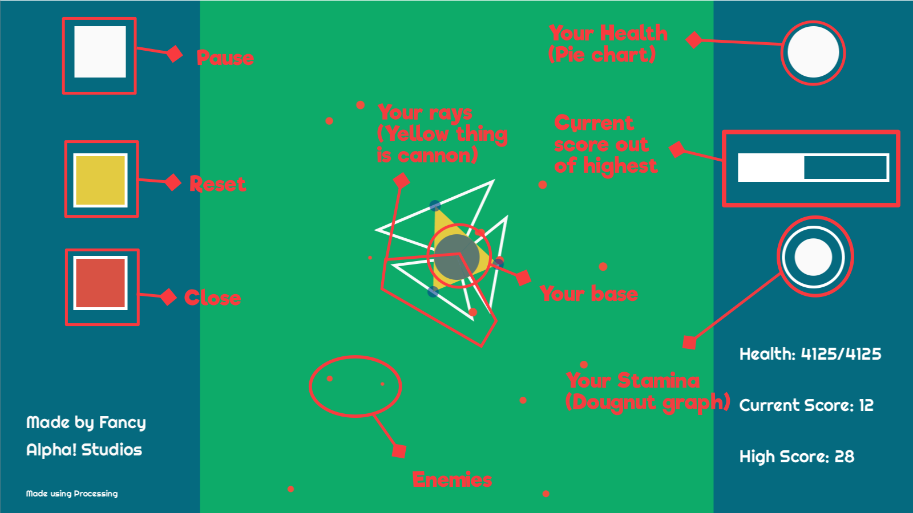

What is this fancy Game?
Project Intersector is an infinite-runner, last stand type of game made on the processing IDE. It is a game where the player (you!) controls 3 cannons and goes about taking down an increasing amount of enemies without mercy. (hopefully without dying)
So...why did I make it?
This game was made for a geometry project. Students could choose anything school-appropriate for the project, but also have to use at least 3 chapters learnt during the school year and spend 10 hours or more on the project. The game development started around mid-march and ended mid-may. It also involved a lot of displaced hair...
How do I play it?
You, the player, are assigned a base (the circle in the centre). The size of your base represents the health. The 3 cannons surrounding the base have nodes which can be dragged around. The white-bordered triangle coming out from each cannon is the ray that damages enemies. Any red thing inside it take damage. Your mission is to Use your cannons to fend off the red dots moving towards you. If they reach base, you take damage. There is a cool down limit (stamina) for how long you can hold your mouse. If you extinguish your stamina, the cannons freeze. Every time you release the mouse, more enemies spawn, but you will also regenerate stamina as well (over time). Be efficient! 
Tips and tricks
- Your main cannon (the cannon that you maved last) does more damage than the other ones.
- Every time you bring an enemy's health to 0, you gain a small boost in stamina
- Remember that you can do damage in 3 directions. Use them wisely.
- Because health is calculated in area, respective health bars seem to decrease in size faster than before. Don't be fooled!
- Try beating my high score of 112. :)
Who is this Fancy Alpha?
Fancy Alpha! is a highschooler who loves making stuff. Stuff like making very simple graphics, logos, websites (like this one), java programs (like the one this website is about), cool paintings, sketches, and on and on and on.
Ooh ooh, I'm a coder too! Can I look at the source code?
SWEET! I love coders! and sure, this game's source code is for anyone to see. Check the code out on open processing

Fancy Alpha!'s Youtube Page & more!
I run a youtube channel as well! Check it out!